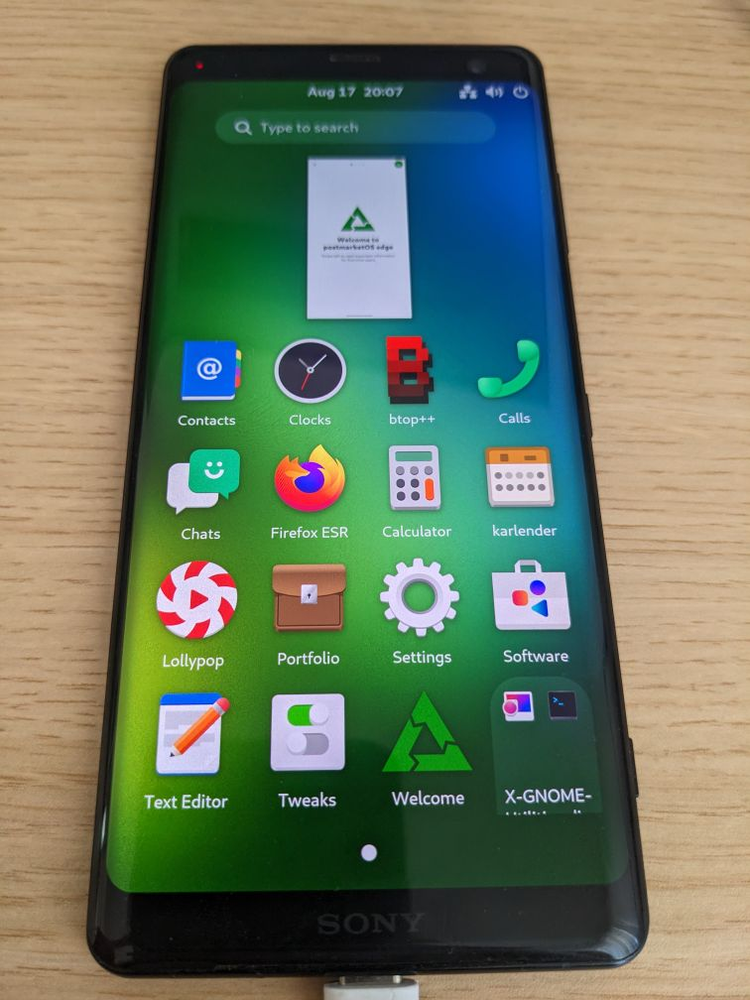

Sony Xperia XZ3 (sony-akatsuki)
|
 Sony Xperia XZ3 | |
| Manufacturer | Sony |
|---|---|
| Name | Xperia XZ3 |
| Codename | sony-akatsuki |
| Released | 2018 |
| Category | testing |
| Original software | Android |
| Hardware | |
| Chipset | Qualcomm Snapdragon 845 (SDM845) |
| CPU | Octa-core (4x 2.8 GHz Kryo 385 Gold & 4x 1.8 GHz Kryo 385 Silver) |
| GPU | Adreno 630 |
| Display | 1440x2880 LCD |
| Storage | 64 GB |
| Memory | 4/6 GB |
| Architecture | aarch64 |
| Type | handset |
{kind=link}
| USB Networking |
Works
|
|---|---|
| Flashing |
Works
|
| Touchscreen |
Works
|
| Display |
Works
|
| WiFi | |
| FDE | |
| Mainline |
Partial
|
| Battery | |
| 3D Acceleration |
Works
|
| Audio | |
| Bluetooth | |
| Camera | |
| GPS | |
| Mobile data | |
| SMS | |
| Calls | |
| USB OTG | |
| NFC | |
| Accelerometer | |
|---|---|
| Magnetometer | |
| Ambient Light | |
| Proximity | |
| Hall Effect | |
| Barometer | |
| Power Sensor | |
| Camera Flash | |
|---|---|
| Keyboard | |
| Touchpad | |
| USB-A | |
| HDMI/DP | |
| Ir TX | |
| Ir RX | |
| Stylus | |
| Haptics | |
| Ethernet | |
| FOSS bootloader | |
Basic info
XZ2/XZ2 Compact/XZ3 has smailer situation (see Samsung Galaxy S III (samsung-m0)#Basic info) as Samsung Galaxy S III (samsung-m0) , Samsung Galaxy S III LTE (samsung-m3) but unlike samsung-m* there are a unify name and unify code name for XZ2/XZ2 Compact/XZ3: Tama device (sony-tama).Currently XZ2/XZ2 Compact/XZ3 are packaged into three subpackages of sony-tama.
How to enter flash mode
You have to press Power + Volume Up to enter the bootloader.
Installation
It is possible to either use a pre-built image as explained in the installation article, or to use pmbootstrap to build your own image.
1. Run pmbootstrap init and select sony as vendor and akatsuki as device.
3. Follow the onscreen instruction and configure as your needs.
Sample output:
[18:20:39] Channel [edge]: [18:20:41] Choose your target device vendor (either an existing one, or a new one for porting). [18:20:41] Available vendors (79): acer, alcatel, amazon, amediatech, apple, ark, arrow, asus, beelink, bq, cubietech, cutiepi, dongshanpi, essential, fairphone, finepower, fly, generic, goclever, google, gp, hisense, htc, huawei, inet, infocus, jolla, klipad, kobo, lark, leeco, lenovo, lg, mangopi, medion, meizu, microsoft, mobvoi, motorola, nextbit, nobby, nokia, nvidia, odroid, oneplus, oppo, ouya, pegatron, pine64, planet, purism, qemu, radxa, raspberry, samsung, semc, sharp, shift, sipeed, sony, sourceparts, surftab, t2m, tablet, thundercomm, tokio, tolino, trekstor, vernee, videostrong, volla, wexler, wiko, wileyfox, xiaomi, xunlong, yu, zte, zuk [18:20:41] Vendor [sony]: [18:20:44] Available codenames (23): amami, aries, castor, coconut, eagle, falconss, hollyss, honami, ivy, leo, mango, nicki, scorpion, seagull, sirius, sumire, suzu, suzuran, tama, taoshan, tuba, tulip, yuga [18:20:44] Device codename [tama]: [18:20:46] Which kernel do you want to use with your device? [18:20:46] Available kernels (3): [18:20:46] * akari: Sony Xperia XZ2 [18:20:46] * akatsuki: Sony Xperia XZ3 [18:20:46] * apollo: Sony Xperia XZ2 Compact [18:20:46] Kernel [apollo]: akatsuki [18:21:21] This device has proprietary components, which trade some of your freedom with making more peripherals work. [18:21:21] We would like to offer full functionality without hurting your freedom, but this is currently not possible for your device. [18:21:21] device-sony-tama-nonfree-firmware: Modem, WiFi and GPU Firmware, also needed for osk-sdl [18:21:21] Enable this package? (y/n) [y]: y
Next, we will build the system:
pmbootstrap install # add --fde if you need full disk encryption (FDE)
Flash the kernel and rootfs:
$ pmbootstrap flasher flash_kernel $ fastboot flash dtbo dtbo_empty.img $ fastboot --disable-verity --disable-verification flash vbmeta vbmeta.img
Installation to SD card
You can take advantage of Akatsuki's SD card slot to install postmarketOS for testing.
Install to the SD card:
$ pmbootstrap install --sdcard=/dev/mmcblk0
Mainline status
There's significant progress on upstreaming the device specific parts to the mainline kernel here: https://github.com/SoMainline/linux
Display
Works fine. MSM DRM based panel.
Touchscreen
3D GPU Acceleration
Since our panels are MSM DRM based, 3D acceleration works perfectly fine using the freedreno driver from mainline.
WiFi
Bluetooth
Audio
Battery
GPS
Camera
Mobile Data, Calls and SMS
Dual SIM
Mobile Data Problems
Change Kernel parameters
1, sudo vim /etc/deviceinfo
2, Change cmdline parameters to desired state
3, sudo apk fix linux-postmarketos-qcom-sdm845
Community Info
Maintainers
- phodina
Users owning this device
See also
- pmaports!4183 Initial merge request
- SDM845 Mainline kernel: https://gitlab.com/sdm845-mainline/linux
- Sony Mainline kernel: https://github.com/SoMainline/linux